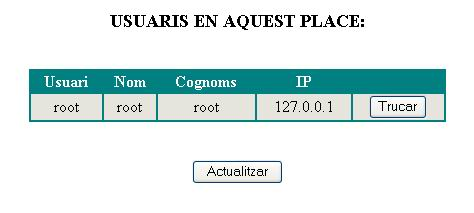

3.12 Netmeeting
La Tool Netmeeting utiliza las propiedades de componentes ActiveX que ofrece el Windows NetMeeting de Microsoft para poder permitir videoconferencia entre usuarios de un mismo Place dentro de MOVE!.
Si nuestro rol tiene permiso de utilizaci�n de esta Tool dentro de un determinado World, y adem�s la hemos activado para poder utilizarla dentro de un determinado Place, entonces veremos que, al entrar en el entorno 3D del Place, �sta aparecer� en el margen inzquierdo de la pantalla:

Como podemos ver, la Tool est� compuesta de diferentes partes:
Pantalla de video remoto. En ella podremos ver el video que estamos recibiendo del usuario con el que estamos manteniendo la videoconferencia
Pantalla de video local. En ella aparecer� el video que estamos enviando a el otro usuario

- Usuario: login que identifica al usuario
- Nombre: nombre del usuario
- Apellidos: apellidos del usuario
- IP: direcci�n IP de la maquina del usuario
Actualiza la tabla de usuarios